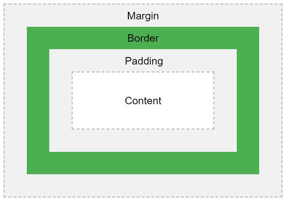

The CSS Box Model is used when talking about design and layout in HTML and CSS.
The Box Model is a box that wraps around every HTML element. It consists of:
Below is a visual representation taken from W3.
How the box model is made and works is as follows:
The box model allows many layers of border that can be utilised in many ways and is a good way to remember what does what when working with all the properties within the model.
I am an example box model.
By understanding the box model, it allows for the knowledge of the width and height of an element with the addition of padding, border and margin.
The total element width is calculated as: left and right padding, plus left and right border, plus left and right margin.
The total element height is calulated as: top and bottom padding, plus top and bottom border and plus top and bottom margin.